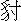

日月盈虧，星辰失度，為人豈無興衰？
子房年幼，逃難在徐邳，伊尹曾耕莘野，子牙嘗釣磻溪。
君不見，韓侯未遇，遭胯下受驅馳，蒙正瓦窯借宿，裴度在古廟依棲。
時來也，皆為將相，方表是男兒。
漢武帝元狩二年，四川成都府一秀士司馬長卿，雙名相如。自父母雙亡，孤身無倚，虀鹽自守。貫串百家，精通經史。雖然遊藝江湖，其實志在功名。出門之時，過城北七里許，曰昇仙橋，相如大書於橋柱上：「大丈夫不乘駟馬車，不復過此橋。」所以北抵京洛，東至齊楚，遂依梁孝王之門，與鄒陽、枚臯輩為友。不期梁王薨，相如謝病歸成都市上。臨邛縣有縣令王吉，每每使人相招。一日到彼相會，盤桓旬日。談間，言及本處卓王孫巨富，有亭臺池館，華美可翫。縣令著人去說，教他接待。
卓王孫貲財巨萬，僮僕數百，門闌奢侈。園中有花亭一所，名曰瑞仙，四面芳菲爛熳，真可遊息。京洛名園，皆不能過此。這卓員外喪偶不娶，慕道修真。只有一女，小字文君，年方十九，新寡在家。聰慧過人，姿態出眾。琴棋書畫，無所不通。
員外一日早晨，聞說縣令友人司馬長卿乃文章巨儒，要來遊玩園池，特來拜訪。慌忙迎接，至後花園中，瑞仙亭上。動問已畢，卓王孫置酒相待。見長卿丰姿俊雅，且是王縣令好友，甚相敬重。道：「先生去縣中安下不便，何不在敝舍權住幾日？」相如感其厚意，遂令人喚琴童攜行李來瑞仙亭安下。倏忽半月。
且說卓文君在繡房中閒坐，聞侍女春兒說：「有秀士司馬長卿相訪，員外留他在瑞仙亭安寓。此生丰姿俊雅，且善撫琴。」文君心動，乃於東牆瑣窗內竊窺視相如才貌。「日後必然大貴。但不知有妻無妻？我若得如此之丈夫，平生願足！爭奈此人簞瓢屢空，若待媒證求親，俺父親決然不肯。倘若挫過此人，再後難得。」過了兩日，女使春兒見小姐雙眉愁蹙，必有所思。乃對小姐道：「今夜三月十五日，月色光明，何不往花園中散悶則個？」小姐口中不說，心下思量：「自見了那秀才，日夜廢寢忘餐，放心不下。我今主意已定，雖然有虧婦道，是我一世前程。」收拾了些金珠首飾，吩咐春兒安排酒果：「今夜與你賞月散悶。」春兒打點完備，隨小姐行來。
話中且說相如久聞得文君小姐貌美聰慧，甚知音律，也有心去挑逗他。今夜月明如水，聞花陰下有行動之聲，教琴童私覷，知是小姐。乃焚香一炷，將瑤琴撫弄。文君正行數步，只聽得琴聲清亮，移步將近瑞仙亭，轉過花陰下，聽得所彈音曰：
鳳兮鳳兮思故鄉，遨遊四海兮求其凰。
時未遇兮無所將，何如今夕兮升斯堂。
有豔淑女在閨房，室邇人遐在我旁。
何緣交頸為鴛鴦，期頡頏兮共翱翔。
鳳兮鳳兮從我棲，得托孳尾永為妃。
交情通體心和諧，中夜相從知者誰。
雙翼俱起翻高飛，無感我思使余悲。
小姐聽罷，對侍女道：「秀才有心，妾亦有心。今夜既到這裡，可去與秀才相見。」遂乃行到亭邊，相如月下見了文君，連忙起身迎接道：「小生夢想花容，何期光降。不及遠接，恕罪，恕罪！」文君斂衽向前道：「高賢下臨，甚缺款待。孤館寂寞，令人相念無已。」相如道：「不勞小姐掛意。小生有琴一張，自能消遣。」文君笑道：「先生不必迂闊。琴中之意，妾已備知。」相如跪下告道：「小生得見花顏，死也甘心。」文君道：「請起，妾今夜到此，與先生賞月，同飲三杯。」春兒排酒果於瑞仙亭上，文君、相如對飲。相如細視文君，果然生得眉如翠羽，肌如白雪。振繡衣，披錦裳，濃不短，纖不長。臨溪雙洛浦，對月兩嫦娥。
酒行數巡，文君令春兒收拾前去：「我便回來。」相如道：「小姐不嫌寒陋，願就枕席之歡。」文君笑道：「妾欲奉終身箕帚，豈在一時歡愛乎？」相如問道：「小姐計將安出？」文君道：「如今收拾了些金珠在此。不如今夜同離此間，別處居住。倘後父親想念，搬回一家完聚，豈不美哉？」當下二人同下瑞仙亭，出後園而走。卻是：鰲魚脫卻金鉤去，擺尾搖頭更不回。
且說春兒至天明不見小姐在房，亭子上又尋不見，報與老員外得知。尋到瑞仙亭上，和相如都不見。員外道：「相如是文學之士，為此禽獸之行！小賤人，你也自幼讀書，豈不聞女子『事無擅為，行無獨出』？你不聞父命，私奔苟合，非吾女也！」欲要訟之於官，爭奈家醜不可外揚，故爾中止，「且看他有何面目相見親戚！」從此隱忍無語，亦不追尋。
卻說相如與文君到家，相如自思囊篋罄然，難以度日：「想我渾家乃富貴之女，豈知如此寂寞！所喜者略無慍色，頗為賢達。他料想司馬長卿必有發達時分。」正愁悶間，文君至。相如道：「日與渾家商議，欲做些小營運，奈無資本。」文君道：「我首飾釵釧，盡可變賣。但我父親萬貫家財，豈不能周濟一女？如今不若開張酒肆，妾自當罏。若父親知之，必然懊悔。」相如從其言，修造房屋，開店賣酒。文君親自當罏記帳。忽一日，卓王孫家僮有事到成都府，入肆飲酒，事有湊巧，正來到司馬長卿肆中。見當罏之婦，乃是主翁小姐，喫了一驚。慌忙走回臨邛，報與員外知道。員外滿面羞慚，不肯認女，但杜門不見賓客而已。
再說相如夫婦賣酒，約有半年。忽有天使捧著一紙詔書，問司馬相如名字，到於肆中，說道：「朝廷觀先生所作《子虛賦》，文章浩爛，超越古人。官裡歎賞，飄飄然有凌雲之志氣，恨不得與此人同時，有楊得意奏言：『此賦是臣之同里司馬長卿所作，現在成都閒居。』天子大喜，特差小官來徵召。走馬臨朝，不許遲延。」
相如收拾行裝，即時要行。文君道：「官人此行富貴，則怕忘了瑞仙亭上！」相如道：「小生受小姐大恩，方恨未報，何出此言？」文君道：「秀才們也有兩般，有那君子儒，不論貧富，志行不移；有那小人儒，貧時又一般，富時就忘了。」相如道：「小姐放心！」夫妻二人，不忍相別。臨行，文君又囑道：「此時已遂題橋志，莫負當罏滌器人！」
且不說相如同天使登程。卻說卓王孫有家僮從長安回，聽得楊得意舉薦司馬相如，蒙朝廷徵召去了。自言：「我女兒有先見之明，為見此人才貌雙全，必然顯達，所以成了親事。老夫想起來，男婚女嫁，人之大倫。我女婿不得官時，我先帶侍女春兒同往成都去望，乃是父子之情，無人笑我。若是他得了官時去看他，教人道我趨時奉勢。」
次日，帶同春兒逕到成都府，尋見文君。文君見了父親，拜道：「孩兒有不孝之罪，望爹爹饒恕！」員外道：「我兒，你想殺我！從前之話，更不須提了。如今且喜朝廷徵召，正稱孩兒之心。我今日送春兒來

侍，接你回家居住。我自差家僮往長安報與賢婿知道。」文君執意不肯。員外見女兒主意定了，乃將家財之半，分授女兒，於成都起建大宅，市買良田，僮僕三四萬人。員外伴著女兒同住，等候女婿佳音。再說司馬相如同天使至京師朝見，獻《上林賦》一篇。天子大喜，即拜為著作郎，待詔金馬門。近有巴蜀開通南夷諸道，用軍興法轉漕繁冗，驚擾夷民。官裡聞知大怒，召相如議論此事，令作諭巴蜀之檄。官裡道：「此一事，欲待差官，非卿不可。」乃拜相如為中郎將，持節而往，令劍金牌，先斬後奏。
相如謝恩，辭天子出朝，一路馳驛而行。到彼處，勸諭巴蜀已平，蠻夷清靜，不過半月，百姓安寧，衣錦還鄉。數日之間，已達成都府。本府官員迎接，到於新宅，文君出迎。相如道：「讀書不負人，今日果遂題橋之願。」文君道：「更有一喜，你丈人先到這裡迎接。」相如連聲：「不敢，不敢！」老員外出見，相如向前施禮。彼此相謝，排筵賀喜。自此遂為成都富室，有詩為證：
夜靜瑤臺月正圓，清風淅瀝滿林巒。
朱弦慢促相思調，不是知音不與彈。
司馬相如本是成都府一個窮儒，只為一篇文字上投了至尊之意，一朝發跡。如今再說南宋朝一個貧士，也是成都府人，在濯錦江居住。亦因詞篇遭際，衣錦還鄉。此人姓俞名良，字仲舉，年登二十五歲。幼喪父母，娶妻張氏，這秀才日夜勤攻詩史，滿腹文章。時當春榜動，選場開，廣招天下人才，赴臨安應舉。俞良便收拾琴劍書箱，擇日起程，親朋餞送。吩咐渾家道：「我去求官，多則三年，少則一載。但得一官半職，即便回來。」道罷，相別，跨一蹇驢而去。
不則一日，行至中途。偶染一疾，忙尋客店安下，心中煩惱。不想病了半月，身邊錢物使盡，只得將驢兒賣了做盤纏。又怕誤了科場日期，只得買雙草鞋穿了，自背書囊而行。不數日，腳都打破了。鮮血淋漓，於路苦楚。心中想道：「幾時得到杭州！」看著那雙腳，作一詞以述懷抱，名《瑞鶴仙》：
春闈期近也，望帝京迢遞，猶在天際。
懊恨這雙腳底，不慣行程，如今怎免得拖泥帶水。
痛難禁，芒鞋五耳倦行時，著意溫存，笑語甜言安慰。
爭氣扶持我去，選得官來，那時賞你穿對朝靴，安排在轎兒裡。
擡來擡去，飽餐羊肉滋味，重教細膩。更尋對小小腳兒，夜間伴你。
不則一日，已到杭州。至貢院前橋下，有個客店，姓孫，叫做孫婆店，俞良在店中安歇了。過不多幾日，俞良入選場已畢，俱各伺候掛榜。只說舉子們，原來卻有這般苦處。假如俞良八千有餘多路，來到臨安，指望一舉成名，爭奈時運未至，龍門點額，金榜無名。俞良心中好悶，眼中流淚。自尋思道：「千鄉萬里來到此間，身邊囊篋消然，如何夠得回鄉？」不免流落杭州。每日出街，有些銀兩，只買酒吃，消愁解悶。看看窮乏，初時還有幾個相識看覷他，後面蒿惱人多了，被人憎嫌。但遇見一般秀才上店吃酒，俞良便入去投謁。每日吃兩碗餓酒，爛醉了歸店中安歇。孫婆見了，埋怨道：「秀才，你卻少了我房錢不還，每日喫得大醉，卻有錢買酒吃！」俞良也不分說。每日早間，間店小二討些湯洗了面，便出門。「長篇見宰相，短卷謁公卿。」搪得幾碗酒吃，喫得爛醉，直到昏黑，便歸客店安歇。每日如是。
一日，俞良走到眾安橋，見個茶坊，有幾個秀才在裡面，俞良便挨身入去坐地。只見茶博士向前唱個喏，問道：「解元吃甚麼茶？」俞良口中不道，心下思量：「我早飯也不曾吃，卻來問我吃茶。身邊銅錢又無，喫了卻捉甚麼還他？」便道：「我約一個相識在這裡等，少間客至來問。」茶博士自退。
俞良坐於門首，只要看一個相識過，卻又遇不著。正悶坐間，只見一個先生，手裡執著一個招兒，上面寫道：「如神見」。俞良想是個算命先生，且算一命看。則一請，請那先生入到茶坊裡坐定。俞良說了年月日時，那先生便算。茶博士見了道：「這是他等的相識來了。」便向前問道：「解元吃甚麼茶？」俞良吩咐：「點兩個椒茶來。」二人吃罷。先生道：「解元好個造物！即目三日之內，有分遇大貴人發跡，貴不可言。」俞良聽說，自想：「我這等模樣，幾時能夠發跡？眼下茶錢也沒得還。」便做個意頭，抽身起道：「先生，我若真個發跡時，卻得相謝。」便起身走。茶博士道：「解元，茶錢！」俞良道：「我只借坐一坐，你卻來問我茶，我那得錢還？先生說我早晚發跡，等我好了，一發還你。」掉了便走。先生道：「解元，命錢未還。」俞良道：「先生得罪，等我發跡，一發相謝。」先生道：「我方纔出來，好不順溜！」茶博士道：「我沒興，折了兩個茶錢！」當下自散。
俞良又去趕趁，喫了幾碗餓酒。直到天晚，酩酊爛醉，踉踉蹌蹌，到孫婆店中，昏迷不醒，睡倒了。孫婆見了，大罵道：「這秀才好沒道理！少了我若干房錢不肯還，每日喫得大醉。你道別人請你，終不成每日有人請你？」俞良便道：「我醉自醉，干你甚事！別人請不請，也不干你事！」孫婆道：「老娘情願折了許多時房錢，你明日便請出門去。」俞良帶酒胡言亂語，便道：「你要我去，再與我五貫錢，我明日便去。」孫婆聽說，笑將起來道：「從不曾見恁般主顧！白住了許多時店房，倒還要詐錢撒潑，也不像斯文體面。」俞良聽得，罵將起來道：「我有韓信之志，你無漂母之仁。我俞某是個飽學秀才，少不得今科不中來科中。你就供養我到來科，打甚麼緊！」乘著酒興，敲檯打凳，弄假成真起來。孫婆見他撒酒瘋，不敢惹他。關了門，自進去了。俞良弄了半日酒，身體困倦，跌倒在床舖上，也睡上了。
五更酒醒，想起前情，自覺慚愧。欲要不別而行，又沒個去處。正在兩難。卻說孫婆與兒子孫小二商議，沒奈何，只得破兩貫錢，倒去陪他個不是，央及他動身。若肯輕輕撒開，便是造化。俞良本待不受，其親身無半文。只得忍著羞，收了這兩貫錢，作謝而去。心下想道：「臨安到成都，有八千里之遙，這兩貫錢，不夠吃幾頓飯，卻如何盤費得回去？」
出了孫婆店門，在街坊上東走西走，又沒尋個相識處。走到飯後，肚裡又饑，心中又悶。身邊只有兩貫錢，買些酒食吃飽了，跳下西湖，且做個飽鬼。當下一逕走出湧金門外西湖邊，見座高樓，上面一面大牌，朱紅大書「豐樂樓」。只聽得笙簧繚繞，鼓樂喧天。俞良立定腳打一看時，只見門前上下首立著兩個人，頭戴方頂樣頭巾，身穿紫衫，腳下絲鞋淨襪，叉著手，看著俞良道：「請坐！」
俞良見請，欣然而入，直走到樓上，揀一個臨湖傍檻的閤兒坐下。只見一個當日的酒保，便向俞良唱個喏：「覆解元，不知要打多少酒？」俞良道：「我約一個相識在此。你可將兩雙箸放在桌上，鋪下兩只盞，等一等來問。」酒保見說，便將酒缸、酒提、匙、箸、盞、楪放在面前，盡是銀器。俞良口中不道，心中自言：「好富貴去處，我卻這般生受！只有兩貫錢在身邊，做甚用？」少頃，酒保又來問：「解元要多少酒，打來？」俞良便道：「我那相識，眼見的不來了，你與我打兩角酒來。」酒保便應了，又問：「解元，要甚下酒？」俞良道：「隨你把來。」當下酒保只當是個好客，折莫甚新鮮果品，可口肴饌，海鮮，案酒之類，鋪排面前，般般都有。將一個銀酒缸盛了兩角酒，安一把杓兒，酒保頻將酒盪。俞良獨自一個，從晌午前直吃到日晡時後。面前按酒，喫得闌殘。俞良手撫雕欄，下視湖光，心中愁悶。喚將酒保來：「煩借筆硯則個。」酒保道：「解元借筆硯，莫不是要題詩賦？卻不可污了粉壁，本店自有詩牌。若是污了粉壁，小人今日當直，便折了這一日日事錢。」俞良道：「恁地時，取詩牌和筆硯來。」須臾之間，酒保取到詩牌筆硯，安在桌上。俞良道：「你自退，我教你便來。不叫時，休來。」當下酒保自去。
俞良拽上閤門，用凳子頂住，自言道：「我只要顯名在這樓上，教後人知我。你卻教我寫在詩牌上則甚？」想起身邊只有兩貫錢，喫了許多酒食，捉甚還他？不如題了詩，推開窗，看著湖裡只一跳，做一個飽鬼。當下磨得墨濃，蘸得筆飽，拂拭一堵壁於乾淨，寫下《鵲橋仙》詞：
來時秋暮，到時春暮，歸去又還秋暮。
豐樂樓上望西川，動不動八千里路。
青山無數，白雲無數，綠水又還無數。
人生七十古來稀，算恁地光陰，能來得幾度！
題畢，去後面寫道：「錦里秀才俞良作。」放下筆，不覺眼中流淚。自思量道：「活他做甚，不如尋個死處，免受窮苦！」當下推開檻窗，望著下面湖水，待要跳下去，爭奈去岸又遠。倘或跳下去不死，攧折了腿腳，如何是好？心生一計，解下腰間繫的舊縧，一搭搭在閤兒裡梁上，做一個活落圈。俞良歎了一口氣，卻待把頭鑽入那圈裡去。你道好湊巧！那酒保見多時不叫他，走來閤兒前，見關著門，不敢敲，去那窗眼裡打一張，只見俞良在內，正要鑽入圈裡去，又不捨得死。酒保喫了一驚，火急向前推開門，入到裡面，一把抱住俞良道：「解元甚做作！你自死了，須連累我店中！」聲張起來，樓下掌管、師工、酒保、打雜人等都上樓來，一時嚷動。
眾人看那俞良時，卻有八分酒，只推醉，口裡胡言亂語不住聲。酒保看那壁上時，茶盞來大小字寫了一壁，叫苦不迭：「我今朝卻不沒興，這一日事錢休了也！」道：「解元，喫了酒，便算了錢回去。」俞良道：「做甚麼？你要便打殺了我！」酒保道：「解元，不要尋鬧。你今日吃的酒錢，總算起來，共該五兩銀子。」俞良道：「若要我五兩銀子，你要我性命便有，那得銀子還你！我自從門前走過，你家兩個著紫衫的邀住我，請我上樓吃酒。我如今沒錢，只是死了罷。」便望窗檻外要跳，唬得酒保連忙抱住。
當下眾人商議：「不知他在那裡住，認晦氣放他去罷。不時，做出人命來，明日怎地分說？」便間俞良道：「解元，你在那裡住？」俞良道：「我住在貢院橋孫婆客店裡。我是西川成都府有名的秀才，因科舉來此間。若我回去，路上攧在河裡水裡，明日都放不過你們。」眾人道：「若真個死了時不好。」只得認晦氣，著兩個人送他去，有個下落，省惹官司。
當下教兩個酒保，攙扶他下樓。出門迤邐上路，卻又天色晚了。兩個人一路扶著，到得孫婆店前，那客店門卻關了。酒保便把俞良放在門前，卻去敲門。裡面只道有甚客來，連忙開門。酒保見開了門，撒了手便走。俞良東倒西歪，踉踉蹌蹌，只待要攧。孫婆討燈來一照，卻是俞良。喫了一驚，沒奈何，叫兒子孫小二扶他入房裡去睡了。孫婆便罵道：「昨日在我家蒿惱，白白裡送了他兩貫錢。說道：『還鄉去。』卻原來將去買酒吃！」俞良只推醉，由他罵，不敢則聲。正是：人無氣勢精神減，囊少金錢應對難。
話分兩頭。卻說南宋高宗天子傳位孝宗，自為了太上皇，居於德壽宮。孝宗盡事親之道，承顏順志，惟恐有違。自朝賀問安，及良辰美景父子同遊之外，上皇在德壽宮閒暇，每同內侍官到西湖遊玩。或有時恐驚擾百姓，微服潛行，以此為常。忽一日，上皇來到靈隱寺冷泉亭閒坐。怎見得冷泉亭好處，有張輿詩四句：
朵朵峰巒擁翠華，倚雲樓閣是僧家。
憑欄盡日無人語，濯足寒泉數落花。
上皇正坐觀泉，寺中住持僧獻茶。有一行者，手托茶盤，高擎下跪。上皇龍目觀看，見他相貌魁梧，且是執禮恭謹。御音問道：「朕看你不像個行者模樣，可實說是何等人？」那行者雙目流淚，拜告道：「臣姓李名直，原任南劍府太守。得罪於監司，被誣贓罪，廢為庶人。家貧無以餬口，本寺住持是臣母舅，權充行者，覓些粥食，以延微命。」上皇惻然不忍道：「待朕回宮，當與皇帝言之。」是晚回宮，恰好孝宗天子差太監到德壽宮問安，上皇就將南劍太守李直吩咐去了，要皇帝復其原官。
過了數日，上皇再到靈隱寺中，那行者依舊來送茶。上皇問道：「皇帝已復你的原官否？」那行者叩頭奏道：「還未。」上皇面有愧容。
次日，孝宗天子恭請太上皇、皇太后，幸聚景園。上皇不言不笑，似有怨怒之意，孝宗奏道：「今日風景融和，願得聖情開悅。」上皇嘿然不答，太后道：「孩兒好意招老夫婦遊玩，沒事惱做甚麼？」上皇歎口氣道：「『樹老招風，人老招賤。』朕今年老，說來的話，都沒人作準了。」孝宗愕然，正不知為甚緣故，叩頭請罪。上皇道：「朕前日曾替南劍府太守李直說個分上，竟不作準。昨日於寺中復見其人，令我愧殺。」孝宗道：「前奉聖訓，次日即諭宰相。宰相說：『李直贓污狼籍，難以復用。』既承聖眷，此小事，來朝便行。今日且開懷一醉。」上皇方纔回嗔作喜，盡醉方休。第二日，孝宗再諭宰相，要起用李直。宰相依舊推辭，孝宗道：「此是太上主意。昨日發怒，朕無地縫可入。便是大逆謀反，也須放他。」遂盡復其原官。此事擱起不題。
再說俞良在孫婆店借宿之夜，上皇忽得一夢，夢遊西湖之上，見毫光萬道之中，卻有兩條黑氣沖天，竦然驚覺。至次早，宣個圓夢先生來，說其備細。先生奏道：「乃是有一賢人流落此地，遊於西湖，口吐怨氣沖天，故托夢於上皇，必主朝廷得一賢人。應在今日，不注吉凶。」上皇聞之大喜，賞了圓夢先生。遂入宮中，更換衣裝，扮作文人秀才，帶幾個近侍官，都扮作斯文模樣，一同信步出城。
行至豐樂樓前，正見兩個著紫衫的，又在門前邀請。當下上皇與近侍官，一同入酒肆中，走上樓去。那一日樓上閤兒恰好都有人坐滿，只有俞良夜來尋死的那閤兒關著。上皇便揭開簾兒，卻待入去，只見酒保告：「解元，不可入去，這閤兒不順溜！今日主人家便要打醋炭了。待打過醋炭，卻教客人吃酒。」上皇便問：「這閤兒如何不順溜？」酒保告：「解元，說不可盡。夜來有個秀才，是西川成都府人，因赴試下第，流落在此。獨自一個在這閤兒裡，喫了五兩銀了酒食，喫得大醉。直至日晚，身邊無銀子還酒錢，便放無賴，尋死覓活，自割自吊。沒奈何怕惹官司，只得又賠店裡兩個人送他歸去。且是住得遠，直到貢院橋孫婆客店裡歇。因此不順溜，主家要打醋炭了，方教客人吃酒。」上皇見說道：「不妨，我們是秀才，不懼此事。」遂乃一齊坐下。上皇擡頭只見壁上茶盞來大小字寫滿，卻是一支《鵲橋仙》詞。讀至後面寫道：「錦里秀才俞良作」，龍顏暗喜，想道：「此人正是應夢賢士，這詞中有怨望之言。」便問酒保：「此詞是誰所作？」酒保告：「解元，此詞便是那夜來撒賴秀才寫的。」上皇聽了，便問：「這秀才現在那裡住？」酒保道：「現在貢院橋孫婆客店裡安歇。」上皇買些酒食喫了，算了酒錢，起身回宮。
一面吩咐內侍官，傳一道旨意，著地方官於貢院橋孫婆店中，取錦里秀才俞良火速回奏。內侍傳將出去，只說太上聖旨，要喚俞良，卻不曾敘出緣由明白。地方官心下也只糊塗，當下奉旨飛馬到貢院橋孫婆店前，左右的一索摳住孫婆。因走得氣急，口中連喚「俞良，俞良！」孫婆只道被俞良所告，驚得面如土色。雙膝跪下，只是磕頭。差官道：「那婆子莫忙。官裡要西川秀才俞良，在你店中也不在？」孫婆方敢回言道：「告恩官，有卻有個俞秀才在此安下，只是今日清早起身回家鄉去了。家中兒子送去，兀自未回。臨行之時，又寫一首詞在壁上。官人如不信，下馬來看便見。」差官聽說，入店中看時，見壁上真個有隻詞，墨跡尚然新鮮，詞名也是《鵲橋仙》，道是：
杏花紅雨，梨花白雪，羞對短亭長路。
東君也解數歸程，遍地落花飛絮。
胸中萬卷，筆頭千古，方信儒冠多誤。
青霄有路不須忙，便著緉草鞋歸去。
原來那俞良隔夜醉了，由那孫婆罵了一夜。到得五更，孫婆怕他又不去，教兒子小二清早起來，押送他出門。俞良臨去，就壁上寫了這支詞。孫小二送去，兀自未回。差官見了此詞，便教左右抄了，飛身上馬。另將一匹空馬，也教孫婆騎坐，一直望北趕去，路上正迎見孫小二。差官教放了孫婆，將孫小二摳住，問俞良安在。孫小二戰戰兢兢道：「俞秀才為盤纏缺少，躊躕不進，現在北關門邊湯團舖裡坐。」當下就帶孫小二做眼，飛馬趕到北關門下。只見俞良立在那灶邊，手裡拿著一碗湯團正吃哩，被使命叫一聲：「俞良聽聖旨。」唬得俞良大驚，連忙放下碗，走出門跪下。使命口宣上皇聖旨：「教俞良到德壽宮見駕。」
俞良不知分曉，一時被眾人簇擁上馬，迤邐直到德壽宮。各人下馬，且於侍班閤子內，聽候傳宣。地方官先在宮門外叩頭復命：「俞良秀才取到了。」上皇傳旨，教俞良借紫入內。俞良穿了紫衣軟帶，紗帽皂靴，到得金階之下，拜舞起居已畢。上皇傳旨，問俞良：「豐樂樓上所寫《鵲橋仙》詞，是卿所作？」俞良奏道：「是臣醉中之筆，不想驚動聖目。」上皇道：「卿有如此才，不遠千里而來，應舉不中，是主司之過也，卿莫有怨望之心！」俞良奏道：「窮達皆天，臣豈敢怨！」上皇曰：「以卿大才，豈不堪任一方之寄？朕今賜卿衣紫，說與皇帝，封卿大官，卿意若何？」俞良叩頭拜謝曰：「臣有何德能，敢膺聖眷如此！」上皇曰：「卿當於朕前，或詩或詞，可做一首，勝如使命所抄店中壁上之作。」俞良奏乞題目。上皇曰：「便只指卿今日遭遇朕躬為題。」俞良領旨，左右便取過文房四寶，放在俞良面前。俞良一揮而就，做了一支詞，名《過龍門令》：
冒險過秦關，跋涉長江，崎嶇萬里到錢塘。
舉不成名歸計拙，趁食街坊。
命蹇苦難當，空有詞章，片言爭敢動吾皇。
敕賜紫袍歸故里，衣錦還鄉。
上皇看了，龍顏大喜，對俞良道：「卿要衣錦還鄉，朕當遂卿之志。」當下御筆親書六句：
錦里俞良，妙有詞章。
高才不遇，落魄堪傷。
敕賜高官，衣錦還鄉。
吩咐內侍官，將這道旨意，送與皇帝，就引俞良去見駕。孝宗見了上皇聖旨，因數日前為南劍太守李直一事，險些兒觸了太上之怒，今番怎敢遲慢？想俞良是錦里秀才，如今聖旨批賜衣錦還鄉，若用他別處地方為官，又恐拂了太上的聖意。即刻批旨：「俞良可授成都府太守，加賜白金千兩，以為路費。」次日，俞良紫袍金帶，當殿謝恩已畢，又往德壽官，謝了上皇。將御賜銀兩備辦鞍馬僕從之類，又將百金酬謝孫婆。前呼後擁，榮歸故里，不在話下。
是日孝宗御駕，親往德壽宮朝見上皇，謝其賢人之賜。上皇又對孝宗說過：傳旨遍行天下，下次秀才應舉，須要鄉試得中，然後赴京殿試。今時鄉試之例，皆因此起，流傳至今，永遠為例矣。
昔年司馬逢楊意，今日俞良際上皇。
若使文章皆遇主，功名遲早又何妨。
本章完!